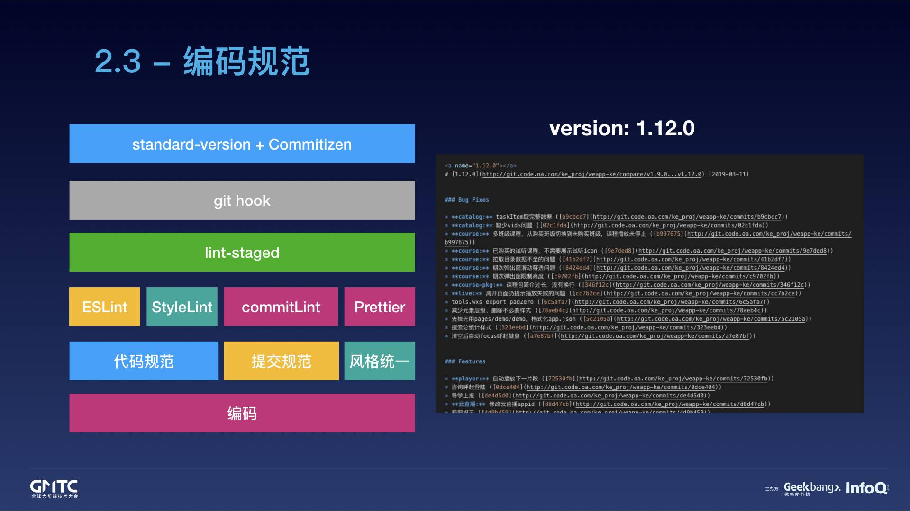

代码风格检查（Code Linting，简称 Lint）是保障代码规范一致性的重要手段。
简单来说，Lint 就是对代码做静态分析，并试图找出潜在问题的工具，实战中我们也用 Lint 来指使用工具的过程。
剑桥大学的研究发现，全世界每年因为软件 Bug 造成的经济损失约 3120 亿美金；
工程师平均会花掉 50% 的工作时间定位和解决各种 Bug，其中不乏那些显而易见的低级错误，而 Lint 很容易发现低级的、显而易见的错误；
代码可读性的首要因子是“表面文章”，表面上看起来乱糟糟的代码通常更难读懂；
可以毫不客气的说，如果你不做 Lint，就是在浪费自己的时间，浪费公司的资源。

$ npm i --save-dev husky lint-staged prettier stylelint eslint
安装时可能会提示需要升级 node 版本，要求 node v8.12 以上。
只需要配置 package.json （示例）
{
"husky": {
"hooks": {
"pre-commit": "lint-staged"
}
},
"lint-staged": {
"*.js": ["eslint --fix", "git add"]
}
}
配置 .eslintrc.js
module.exports = {
// 继承npm上已经配置好的规则，例如这里用的是 eslint 推荐规则和 vue/essential 推荐的规则
// 使用扩展时需要先安装对应的npm包
// npm i --save-dev eslint-plugin-vue
extends: [ 'eslint:recommended', 'plugin:vue/essential'],
// 自定义相关规则
// 0 = off, 1 = warn, 2 = error
rules: {
// 开发环境关闭规则，生产环境中打开规则
'no-console': process.env.NODE_ENV === 'production' ? 'error' : 'off',
'no-debugger': process.env.NODE_ENV === 'production' ? 'error' : 'off',
'space-before-function-paren': 0,
},
// 定义可以直接使用的全局参数
// 设置成 false 可以避免检测
globals: {
wx: false,
BMap: false,
},
// babel编译es6语法，需要先安装 babel-eslint 依赖
// npm i --save-dev babel-eslint
parserOptions: {
parser: 'babel-eslint',
},
};
测试规则是否生效，运行命令：
node_modules/.bin/eslint src/main.js --fix
加上 --fix 会自动修复一些问题
修改项目文件，然后执行commit命令
git commit -am 'keep calm and commit'在 package.json 中配置
{
...
"lint-staged": {
"src/**/*.{js,vue}": [
"prettier --tab-width 4 --single-quote true --trailing-comma es5 --write",
"eslint --fix",
"git add"
]
}
...
}
prettier命令行也支持指定配置文件：
prettier --config ./.prettierrc.js
{
// .js files in the directory
"*.js": "eslint",
// .js files anywhere in the project
"**/*.js": "eslint",
// .js file in the src directory
"src/*.js": "eslint",
// .js file anywhere within and below the src directory
"src/**/*.js": "eslint"
}
// API参数参考：
// https://prettier.io/docs/en/options.html
module.exports = {
tabWidth: 2,
semi: false,
trailingComma: 'none',
singleQuote: true
}